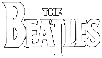
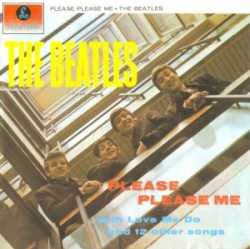

PARTE I - PLEASE PLEASE ME
Quisas les paresca raro que justamente yo les vaya a contar brevemente (como pienso hacer) la historia de los Beatles, y que de un repaso a su discografia escencial...
Aunque no lo crean The Beatles es una banda que me gusta muchisimo y creo que todos (por lo menos) deberian de darle una oportunidad... dejen de lado los prejuicios por un momento y piensenlo por un segundo... ¿acaso puede ser malo un fenomeno que empeso hace mas de treinta años y aun hoy sigue vigente?... OK, si puede serlo pero este no es el caso ¡creanme!.
LOS COMIENSOS
La historia de los Beatles empieza los ultimos días de 1956 en la Iglesia de San Pedro en Liverpool, ahi un joven de 26 años llamado John Lennon estava con su banda (The Quarry Men) participando del festival anual de fin de año.
Ahi en el backstage un amigo le presento a un joven de 25 años llamado Paul McCartney... este toco un par de temas clasicos de rock n' roll, "Long tall Sally" de Little Richard's y otros... John se vio muy sorprendido de como Paul podia tocar a la perfeccion los temas de sus musicos favoritos.
Ambos se siguieron viendo y en cuestion de semanas Paul ya era parte del grupo de John.
Luego Paul trajo a su amigo Geroge Harrison (en guitarra) y a mediados de 1960 un tal Stuart Stucliffe se ocupo del bajo.
A fines de 1960 decidieron llamarse The Beatles, y poco tiempo despues Pete Best paso a ser el baterista.
Al tiempo decidieron partir para Hamburgo, Alemania donde estuvieron tres meses... ¿que hicieron ahi?, bueno... tocaban todas las noches en clubes... y tambien se descontrolaron de lo lindo. para que se den una idea: George fue deportado, Paul y Pete fueron echados a patadas de alemania por ¡prender fuego a su departamento!...
John poco despues volvio a Liverpool con sus amigos. El unico que se que quedo fue Stu que se enamoro de una fotografa alemana llamada Astrid Kirschherr, por esto se fue de la banda. Stu luego moriria de una hemorragia cerebral en 1962.
Con el grupo ya devuelta en Inglaterra los dueños de los clubes se sorprendieron de cuanto los Beatles progresaban, cada ves mas gente los seguia y se enloquecia con ellos. Luego a mediados de Junio la banda toco para el vocalista Tony Sheridan en seis canciones, incluyendo el simple "My Bonnie" que fue un hit menor en Alemania.
Igualmente a esta altura John y Paul estavan escribiendo sus propias canciones... a esa altura ya habian escrito "I Follow The Sun" y "One After 909". Tiempo despues Brian Epstein los "ficho" y se ofrecio ser su manager, dos meses despues tuvieron una audicion para Decca Records.
Una mañana de 1961 la banda se traslado a Londres para la audición, ¿como les fue? el sello no los tomo... los pobres giles aun hoy se deven de estar arrepintiendo...
Luego firmaron un contrato "oficial" con Epstein y este los convencio de "rearmar" su imagen, el fue el que los convencio de los cortes de pelo y de los trajes todos iguales. Epstein tomo las copias de las audiciones de Decca y las mando a otros sellos. En Junio de 1962 audicionaron para George Martin la cabesa de A&R, la subsidiaria de EMI y Pharlaphone Records.
A Mabueno, rtin le parecio una propuesta bastante original, pero sobre todo le impresiono la potencia que tenia el grupo, por eso decidio darles un contrato. El unico punto flojo para el era Pete Best, que no era un gran baterista, la banda en cierto punto estava de acuerdo, por eso nunca le habisaron a pete del contrato y al mes lo echaron y lo remplazaron por Ringo Starr que tocaba la bateria en The hurricanes.
Por si no se dieron cuenta estos chicos eran muy malas personas, de echo años despues (con ya los Beatles separados) John dijo "para llegar a ser una banda exitosa tenes que ser muy hijo de puta, nosotros fuimos la banda mas grande, nosotros fuimos los mas hijos de puta de todos..."
Pero sigamos con la historia: el 11 de septiembre de 1962 el grupo se disponia a hacer su primera grabacion oficial para EMI Records, ahi Ringo se entero (porque se lo comunico George Martin) que el no tocaria la bateria, que habian contratado a un sesionista llamado Andy White.
Ringo solo tuvo la humillante participacion de tocar la pandereta y las maracas en "Love Me Do" y en "P.S. I love you", las dos caras del primer single
La legenda cuenta que Epstein ordeno 10.000 copias del primere simple para que llegara a puesto numero uno, esto el siempre lo desmintio, pero la realidad es que llego al nro. 17 de los charts Ingleses.
Su segundo Single "Please Please Me" llego al nro. 1 en febrero de 1963. Los beatles ya se perfilaban como estrellas, en Marzo su album debut Please Please me salio a la calle y estuvo en el tope de los charts por 30 semanas.
PLEASE PLEASE ME

Como todo primer album de cualquier banda es el mas crudo, el mas desprolijo, el de menor produccion y el que tiene "mas fuerza".
Esta no es la esepción a esa regla, este es el disco mas rockero de los Beatles, de echo 6 temas no son de ellos sino que son de otros autores...
La mayoria de los temas estan grabados de primera toma, de echo el disco es mono ¡ni siquiera existia el stereo en esos tiempos!, resulta increible ver como una banda que grababa en condiciones tan precarias podia sonar tan bien, con tanta vida.
Aqui encontramos clasicos como "Love Me Do", "I Saw Her Standing There", "P.S. I Love Do" y la recontraconocida "Twist And Shout", sobre esta cuenta la leyenda que en la primera toma John grito tanto que se quedo sin voz y nunca pudo grabar otra, por eso esa primera y unica toma es la que esta en el disco.
En definitiva, Please Please me es el primer pantallaso a una banda que marco a una generacion y que partio a la historia de la musica en dos, este es el principio de una leyenda... ¡no dejen de escucharlo!.